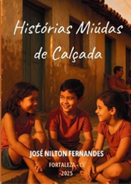

Histórias Miúdas de Calçada
Adquira a sua edição física ou digital.
Este livro nasceu de memórias que se entrelaçam com o cheiro do mar, o canto dos pássaros, o rumor das redes ao vento, e a essência do interior nordestino — um mosaico de aromas, de cores, de sons. Foi escrito com a paciência de quem observa o nascer do sol na praia, com a calma de quem ajeita uma rede na manhã de domingo, sabendo que as histórias, por mais singelas, guardam a alma de uma vida bem vivida, tingida de poesia e calma. São sessenta e quatro contos, como pegadas na areia molhada, que deixam marcas leves, mas que o tempo não apaga do coração. Cada um com sua cor, seu ritmo, sua história — alguns vestidos de nostalgia, outros de brilho fugaz. Mas todos carregam a essência de Aracati: sua malemolência, seu humor sem cerimônia, seu jeito de encontrar poesia na brisa que vem do mar, na murmuração das folhas ressecadas, no silêncio das noites estreladas. Este livro é uma homenagem à cidade que vive no seu peito, às histórias que fazem sorrir sozinho, e ao homem simples que aprendeu a ver beleza nas coisas do cotidiano. Que seja como uma rede balançando ao vento, convidando quem quiser escutar a melodia suave da sua relação com a natureza, com o chão, com o mar, e com a alma daquele povo que sabe transformar o simples em poesia.